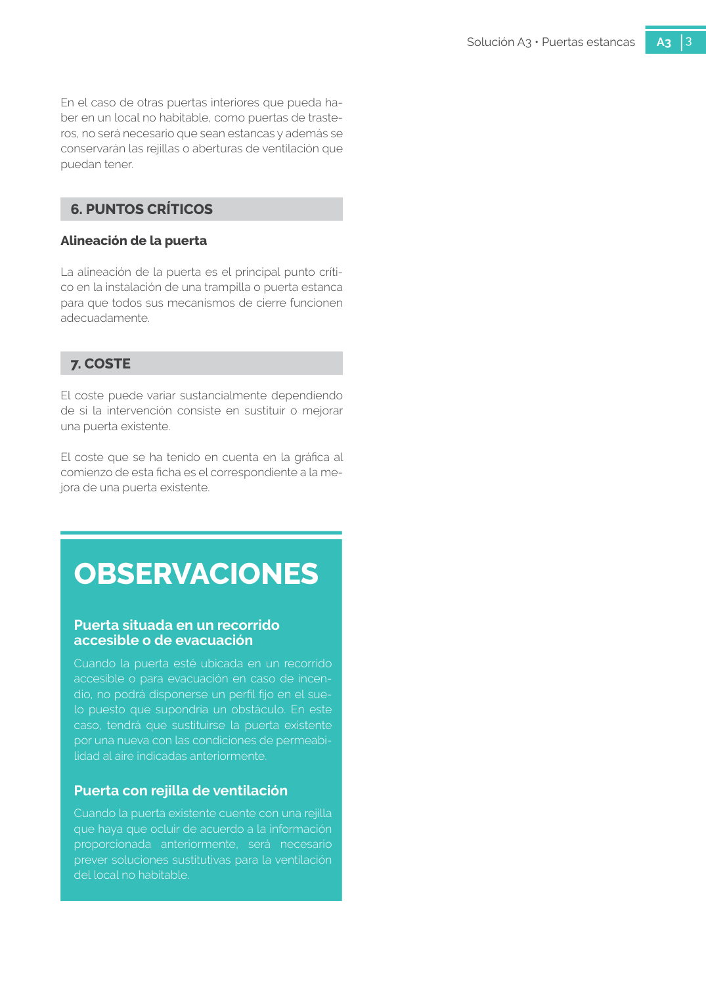

GUIA · 6. PUNTOS CRÍTICOS Alineación de la puerta · versión sin-fecha · capa guia
Formatos: JSON compacto · Markdown · PDF fuente
Ámbito del documento · texto del ámbito · documento y tablas
Tipo: figuras · nivel 1 · sección estimada: 6. PUNTOS CRÍTICOS Alineación de la puerta · padre:
6. PUNTOS CRÍTICOS Alineación de la puerta Alineación de la puerta La alineación de la puerta es el principal punto críti co en la instalación de una trampilla o puerta estanca para que todos sus mecanismos de cierre funcionen adecuadamente.

PDF fuente redistribuible: copia fiel enlazada en esta página (SHA256 verificado).